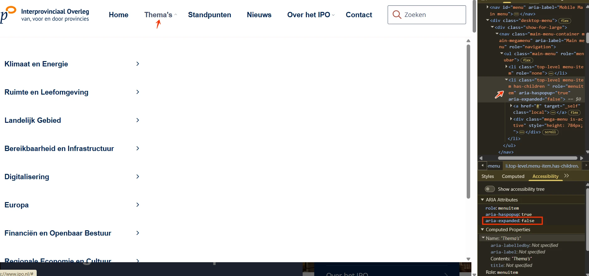
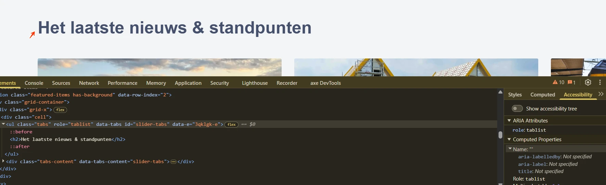
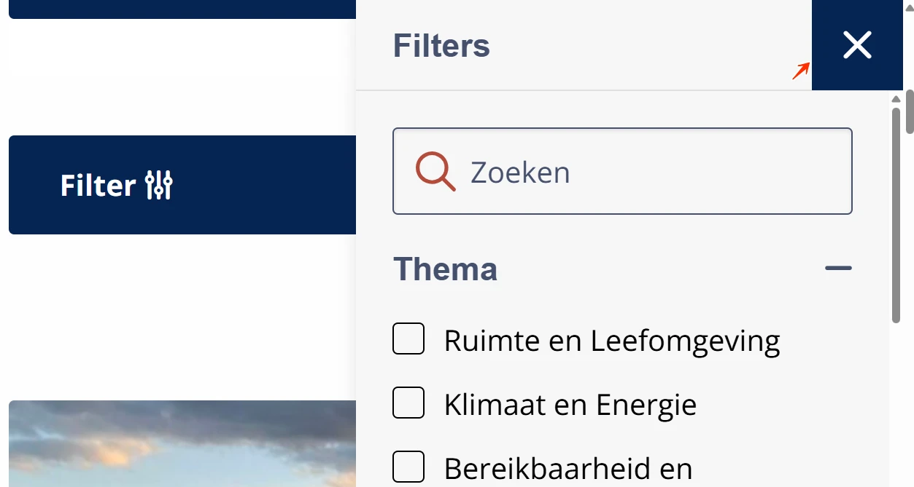
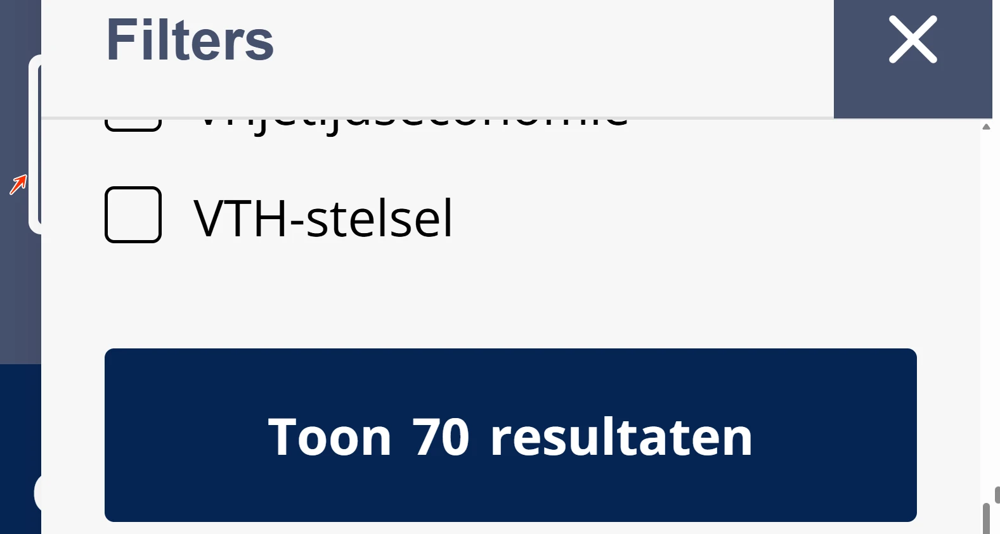
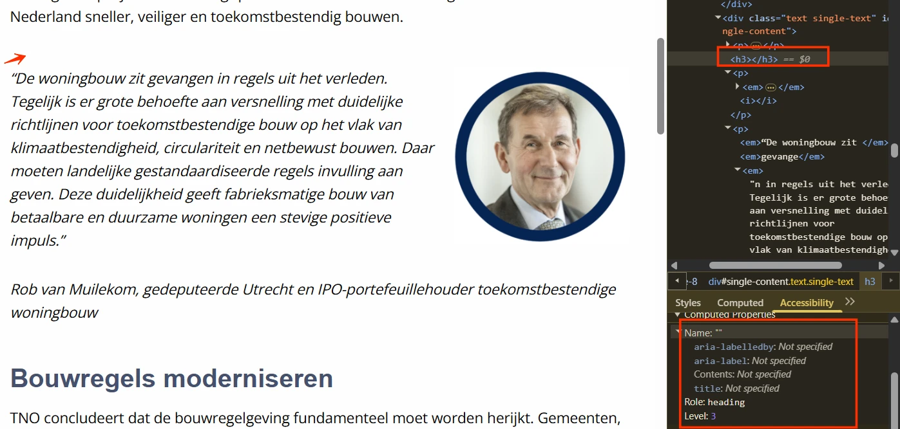
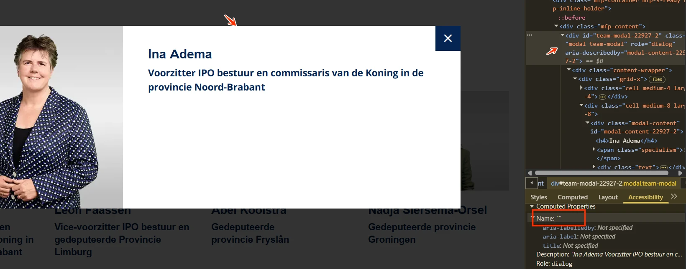

Audit digitale toegankelijkheid van website ipo.nl
Samenvatting
Wij hebben de website ipo.nl onderzocht tussen 27 mei en 10 juni 2026. Op dit moment is een deel van de succescriteria als voldoende beoordeeld. In dit rapport lees je welke punten nog verbetering behoeven en hoe deze kunnen worden aangepakt.
Als een bezoeker de website voor het eerst bezoekt, verschijnt er een cookiebanner. In deze cookiebanner staat een knop met witte tekst "Alles toestaan" op een groene (#16A030) achtergrond. De contrastverhouding is 3,4:1. Normale tekst (kleiner dan 18pt, of kleiner dan 14pt vetgedrukt) heeft een contrastverhouding van minimaal 4,5:1 nodig om leesbaar te zijn. Onvoldoende contrast maakt tekst moeilijk of onmogelijk leesbaar voor bezoekers met een visuele beperking, kleurenblindheid of bezoekers die hun scherm in een fel verlichte omgeving bekijken.
User story
Als bezoeker met een visuele beperking kan ik tekst met weinig contrast tegen de achtergrond niet onderscheiden. Ik verwacht dat tekst altijd duidelijk afsteekt tegen de achtergrond.
Hoe te testen
Gebruik Axe of Lighthouse voor een geautomatiseerde contrastcontrole en meet randgevallen daarna handmatig met de Colour Contrast Analyser. De ondergrens is 4,5:1 voor normale tekst en 3,0:1 voor grote tekst (≥24px normaal of ≥18,7px vetgedrukt). Vergeet placeholders, tekst op afbeeldingen en ogenschijnlijk uitgeschakelde elementen niet.
Oplossing
Pas de tekstkleur of de achtergrondkleur aan, zodat de contrastverhouding minimaal 4,5:1 is. Gebruik een contrastcheck-tool zoals de Colour Contrast Analyser om te controleren of het voldoet.
#2 - Toetsenbordfocus komt buiten het dialoogvenster
Impact: GrootType: TechniekWCAG: 2.4.3EN: 9.2.4.3
Als een bezoeker de website voor het eerst bezoekt, verschijnt er een cookie-dialoogvenster. Op dit moment kan de toetsenbordfocus uit het geopende dialoogvenster ontsnappen en op de onderliggende pagina terechtkomen.
Dit is onjuist gedrag voor modale dialoogvensters. Zolang het dialoogvenster open is, moet de toetsenbordfocus binnen het dialoogvenster blijven.
User story
Als bezoeker gebruik ik de website met een toetsenbord en een schermlezer. Als een dialoogvenster open is en ik op Tab druk, kom ik op de pagina erachter terecht. Ik verwacht dat de focus binnen het dialoogvenster blijft totdat ik het sluit.
Hoe te testen
Tab van boven naar beneden door de pagina en let op of de toetsenbordvolgorde betekenisvol en logisch is. Open elk dialoogvenster, elke uitklaplijst en elk dynamisch component en controleer of de focus op een logische plek belandt. Vermijd het gebruik van positieve tabindex-waarden zoveel mogelijk.
Oplossing
Dit kan met JavaScript worden bereikt door de focus binnen het dialoogvenster vast te houden totdat het wordt gesloten (door op een sluitknop te klikken of op Escape te drukken). Een alternatief is dat het dialoogvenster automatisch sluit wanneer de focus buiten het venster komt.
#3 - Toetsenbordfocus wordt afgedekt door het dialoogvenster
Impact: GrootType: TechniekWCAG: 2.4.11
Als een bezoeker de website voor het eerst bezoekt, verschijnt er een cookie-dialoogvenster. Dit dialoogvenster bedekt op kleine schermen een deel van de pagina. Interactieve elementen onder dit dialoogvenster zijn dan volledig afgedekt.
User story
Als bezoeker gebruik ik de website met een toetsenbord. Als ik met Tab door de pagina ga, beland ik soms op een element dat ik niet kan zien. Ik verwacht dat focusbare elementen altijd geheel of gedeeltelijk zichtbaar zijn.
Hoe te testen
Tab door de pagina terwijl sticky headers, footers, cookiebanners en chatwidgets zichtbaar zijn. Bij elke stap moet ten minste een deel van het gefocuste element met de focusindicator zichtbaar zijn, nooit volledig verborgen achter andere inhoud.
Oplossing
Het interactieve element dat focus krijgt mag niet volledig bedekt worden door andere content.
#4 - Zichtbare tekst van het logo staat niet in de alternatieve tekst
Het logo bovenaan de website toont de volledige tekst "ipo Interprovinciaal Overleg van, voor en door provincies", maar het alt-attribuut is leeg. De alt-tekst moet alle zichtbare tekst in het logo bevatten, zodat bezoekers die de afbeelding niet kunnen zien dezelfde informatie krijgen.
Dit probleem hangt ook samen met succescriterium 2.5.3: de zichtbare tekst van de link "ipo Interprovinciaal Overleg van, voor en door provincies" is niet opgenomen in de toegankelijke naam. De toegankelijke naam is alleen "Homepagina".
User story
Als bezoeker lees ik de website met een schermlezer. Als ik bij het logo kom, hoor ik niet de volledige naam van de organisatie. Ik verwacht dat de tekst die ik hoor overeenkomt met wat er visueel in het logo staat.
Hoe te testen
Inspecteer elke afbeelding, elk icoon en elke SVG in DevTools. Informatieve elementen hebben een tekstalternatief nodig dat hun betekenis overbrengt: een alt-attribuut op een img-element, een aria-label of title-element op een SVG, of een toegankelijke naam op icoonfonts. Decoratieve elementen horen helemaal niet in de HTML, gebruik in plaats daarvan een CSS-achtergrond. Staat een decoratief element toch in de HTML, verberg het dan voor hulpsoftware met aria-hidden="true" (of alt="" als het echt een img-element is). Controleer met een schermlezer dat er geen ruis (bestandsnaam, "afbeelding") wordt voorgelezen.
Oplossing
Werk het tekstalternatief bij zodat het de volledige tekst bevat: "ipo Interprovinciaal Overleg van, voor en door provincies".
#5 - Submenu kan niet met het toetsenbord worden geopend
Impact: GrootType: TechniekWCAG: 2.1.1EN: 9.2.1.1
Het hoofdmenu-item "Thema's" opent een submenu bij hover, maar deze functie is niet beschikbaar voor toetsenbordgebruikers. Alle inhoud moet toegankelijk zijn voor bezoekers die alleen het toetsenbord gebruiken.
User story
Als bezoeker gebruik ik de website met een toetsenbord. Als ik door de pagina navigeer en met de muis over een link beweeg, verschijnt de extra inhoud. Ik verwacht dat dezelfde informatie zichtbaar is zonder muis.
Hoe te testen
Koppel de muis los en loop met Tab, Enter, Spatie en de pijltjestoetsen door de pagina. Elke link, knop, formuliereveld en aangepast component moet bereikbaar en bedienbaar zijn. Let op onclick-handlers zonder toetsenbordequivalent en interacties die alleen met slepen werken.
Oplossing
Zorg ervoor dat dit submenu met het toetsenbord kan worden geopend.
#6 - Informatie over de status van het submenu verandert niet
Impact: GrootType: TechniekWCAG: 4.1.2EN: 9.4.1.2

Het hoofdmenu-item "Thema's" opent een submenu bij hover. Het aria-expanded-attribuut op de knop wordt echter niet correct bijgewerkt om de status van het submenu weer te geven. Het blijft "false", ook wanneer het submenu open is.
User story
Als bezoeker gebruik ik een schermlezer om de website te navigeren. Als ik het menu-item "Thema's" activeer, hoor ik dat het submenu altijd gesloten is, ook wanneer het open is. Ik verwacht dat de schermlezer mij vertelt of het submenu uitgeklapt of ingeklapt is.
Hoe te testen
Gebruik voor elk interactief component (link, knop, invoerveld, aangepaste widget) het accessibility-paneel van DevTools en een schermlezer. Van elk component moet bekend zijn: wat het is (rol), de naam, de huidige status (uitgeklapt, geselecteerd, aangevinkt) en, waar relevant, de waarde. Geef de voorkeur aan native HTML boven aangepaste ARIA.
Oplossing
Het aria-expanded-attribuut moet dynamisch worden bijgewerkt naar true wanneer het submenu open is en false wanneer het gesloten is. Zo geeft hulpsoftware de status van het submenu correct door aan bezoekers.
#7 - Navigatiemenu gebruikt een onjuiste ARIA-menubar-structuur
Impact: GrootType: TechniekWCAG: 4.1.2EN: 9.4.1.2
Het navigatiemenu "Thema's" is gebouwd met het ARIA-menubar-patroon, maar de vereiste rollen, statussen en relaties zijn niet correct toegepast.
Door het hele menu heen zijn role="menuitem" en de attributen aria-haspopup en aria-expanded toegepast op niet-focusbare li-elementen, terwijl de werkelijk interactieve elementen de geneste links (a-elementen) zijn. Daardoor geven de elementen die toetsenbordfocus krijgen niet de verwachte rol, popup-informatie of uitgeklapt/ingeklapt-status door aan hulpsoftware.
De menuhiërarchie gebruikt ook role="menubar" voor geneste submenu's. Een genest popup-submenu hoort echter role="menu" te gebruiken in plaats van role="menubar", die bedoeld is voor een permanent zichtbare menubalk op het hoogste niveau.
Daarnaast geven veel submenu-items aria-haspopup en aria-expanded door terwijl ze geen ander submenu openen. Links als "Over klimaat en energie", "Energietransitie: nut en noodzaak" en vergelijkbare items worden bijvoorbeeld aangekondigd alsof ze extra popups bedienen, terwijl ze alleen als link functioneren.
Hierdoor kan hulpsoftware onjuiste rollen, statussen en relaties doorgeven. Schermlezergebruikers weten dan mogelijk niet welke items daadwerkelijk submenu's openen, welke submenu's uitgeklapt of ingeklapt zijn en welke items gewone links zijn. De navigatie wordt daardoor lastig te begrijpen en voorspelbaar te bedienen.
User story
Als bezoeker gebruik ik een schermlezer. Als ik door het hoofdmenu navigeer, verwacht ik dat het gefocuste item correct aankondigt of het een submenu opent en of dat submenu uitgeklapt of ingeklapt is. Ik verwacht ook dat links die geen submenu openen, gewoon als link worden aangekondigd. Als menu-items onjuiste rollen of statussen doorgeven, kan ik de structuur van de navigatie niet betrouwbaar begrijpen of voorspellen wat er gebeurt als ik een item activeer.
Hoe te testen
Navigeer door het menu "Thema's" met een toetsenbord en een schermlezer. Controleer of gefocuste items die submenu's openen, accurate popup- en uitgeklapt/ingeklapt-informatie doorgeven. Bevestig dat aria-haspopup en aria-expanded zijn toegepast op de focusbare interactieve elementen in plaats van op de niet-focusbare containerelementen. Controleer of deze attributen alleen aanwezig zijn op items die daadwerkelijk een submenu bedienen en of geneste submenu's de juiste rollen gebruiken. Controleer ook of items die alleen als link functioneren, niet als submenu-bediening worden doorgegeven.
Oplossing
Gebruik standaard HTML-navigatiemarkup voor eenvoudige websitemenu's, zoals nav-, ul-, li- en a-elementen. Vermijd menubar- en menuitem-rollen, tenzij het volledige ARIA-menupatroon, inclusief het verwachte toetsenbordgedrag, correct is geïmplementeerd.
Is een menubalk specifiek gewenst, raadpleeg dan de ARIA Authoring Practices voor richtlijnen om role="menubar" en de bijbehorende ARIA-attributen correct te implementeren: https://www.w3.org/WAI/ARIA/apg/patterns/menu/.
#8 - Statuswijziging wordt niet doorgegeven aan hulpsoftware
Impact: GrootType: TechniekWCAG: 4.1.2EN: 9.4.1.2
De link "Over het IPO" in het hoofdmenu opent en sluit een submenu, maar deze wijziging wordt niet programmatisch doorgegeven aan hulpsoftware: open-dicht.
Als een interactief element van status verandert, zoals uitgeklapt/ingeklapt, aan/uit of geselecteerd/niet-geselecteerd, moet deze wijziging programmatisch worden doorgegeven aan hulpsoftware. Schermlezergebruikers zijn volledig afhankelijk van deze programmatische statusinformatie om te begrijpen wat er op het scherm gebeurt. Zonder die informatie kunnen ze het resultaat van hun actie niet bepalen en het component niet goed bedienen.
User story
Als bezoeker lees ik de website met een schermlezer. Als ik door de pagina navigeer en een link focus krijgt, klapt het submenu uit. Ik hoor niets dat de wijziging bevestigt. Ik verwacht dat mijn schermlezer mij vertelt of iets open of gesloten is.
Hoe te testen
Gebruik voor elk interactief component (link, knop, invoerveld, aangepaste widget) het accessibility-paneel van DevTools en een schermlezer. Van elk component moet bekend zijn: wat het is (rol), de naam, de huidige status (uitgeklapt, geselecteerd, aangevinkt) en, waar relevant, de waarde. Geef de voorkeur aan native HTML boven aangepaste ARIA.
Oplossing
Zorg ervoor dat statuswijzigingen programmatisch worden doorgegeven door het aria-expanded-attribuut bij te werken wanneer de status verandert.
#9 - Zoeksuggesties hebben niet de juiste rol
Impact: GrootType: TechniekWCAG: 4.1.2EN: 9.4.1.2
In de header geeft de zoekbalk suggesties in een uitklaplijst terwijl de bezoeker typt en functioneert daarmee als combobox. De benodigde rol ontbreekt echter in het invoerveld.
User story
Als bezoeker lees ik de website met een schermlezer. Als ik in de zoekbalk typ, hoor ik niet dat er suggesties verschijnen. Ik verwacht dat mijn schermlezer aankondigt wanneer de lijst met suggesties opent.
Hoe te testen
Gebruik voor elk interactief component (link, knop, invoerveld, aangepaste widget) het accessibility-paneel van DevTools en een schermlezer. Van elk component moet bekend zijn: wat het is (rol), de naam, de huidige status (uitgeklapt, geselecteerd, aangevinkt) en, waar relevant, de waarde. Geef de voorkeur aan native HTML boven aangepaste ARIA.
Oplossing
Voeg ten minste het volgende toe om deze zoekbalk toegankelijk te maken als combobox:
role="combobox": voeg dit attribuut toe aan het invoerveld om de rol als combobox aan te geven.
aria-expanded: voeg dit attribuut toe aan het invoerveld om de status van de suggestielijst aan te geven. Stel aria-expanded="true" in wanneer de lijst zichtbaar is en aria-expanded="false" wanneer hij verborgen is.
In de footer staan logo's voor "Bij12's | Werkt voor provincies" en "Huis van de | NEDERLANDSE PROVINCIES" die als link functioneren. Deze logo's hebben geen tekstalternatieven. Het alt-attribuut is leeg.
Logo's zijn informatieve afbeeldingen en hebben een tekstalternatief (de alt-tekst) nodig. De alt-tekst moet de volledige tekst bevatten die in het logo te zien is. Zo begrijpen bezoekers die de afbeelding niet kunnen zien de inhoud ervan.
Dit probleem hangt ook samen met succescriterium 4.1.2, omdat de links geen toegankelijke naam hebben; met succescriterium 2.4.4, omdat het doel van de links niet duidelijk is; en met succescriterium 2.5.3, omdat de zichtbare tekst van de logo's niet is opgenomen in de toegankelijke naam van de links.
User story
Als bezoeker lees ik de website met een schermlezer. Ik verwacht dat het logo een tekstalternatief heeft dat de naam van de organisatie bevat. Als een logo een link is, moet ik de bestemming van de link weten.
Hoe te testen
Inspecteer elke afbeelding, elk icoon en elke SVG in DevTools. Informatieve afbeeldingen hebben een tekstalternatief nodig dat hun betekenis overbrengt; decoratieve img-elementen gebruiken alt="" en svg-elementen gebruiken aria-hidden="true".
Oplossing
Voeg een tekstalternatief toe aan deze afbeelding, bijvoorbeeld door de zichtbare tekst in het alt-attribuut te plaatsen.
#11 - Knopnaam beschrijft niet wat de knop doet
Impact: GrootType: TechniekWCAG: 2.4.6EN: 9.2.4.6
Op een klein scherm staat in de header de knop "Menu" die het mobiele menu opent. Nadat de bezoeker het navigatiemenu heeft geopend en weer gesloten, is de toegankelijke naam van deze knop "SLUIT MENU", wat de functie niet beschrijft. Dat maakt het voor blinde bezoekers en schermlezergebruikers lastig om het doel van de knop te begrijpen. De toegankelijke naam moet de actie van de knop duidelijk en bondig overbrengen.
User story
Als bezoeker lees ik de website met een schermlezer. Als ik een knop tegenkom, hoor ik een naam die mij niet vertelt wat de knop doet. Ik verwacht dat elke knop een duidelijke naam heeft die de actie beschrijft.
Hoe te testen
Maak een lijst van alle koppen (gebruik HeadingsMap of de koppenlijst van een schermlezer) en alle formulierlabels. Elk moet duidelijk genoeg beschrijven wat erop volgt om een navigatiekeuze te kunnen maken. Vage koppen als "Sectie" of "Meer info" helpen niet; identieke labels voor verschillende velden ook niet.
Oplossing
Wijzig de toegankelijke naam zodat deze de functie van de knop correct weergeeft (bijvoorbeeld "Menu openen").
#12 - Onjuiste ARIA-rollen in het mobiele navigatiemenu
Impact: GrootType: TechniekWCAG: 4.1.2EN: 9.4.1.2
Op een klein scherm opent de knop "Menu" in de header het navigatiemenu. Het navigatiemenu is echter gebouwd met ARIA-rollen die het doel en de structuur niet correct weergeven.
De navigatie wordt blootgegeven als een tree-widget met role="tree" en role="treeitem", terwijl het als websitenavigatiemenu functioneert. Tree-widgets zijn bedoeld voor hiërarchische applicatiebediening en vereisen specifieke interactiepatronen die afwijken van standaard websitenavigatie.
Daarnaast wordt de tekst "Menu" in het navigatiemenu als treeitem blootgegeven, ook al is het een sectietitel en geen interactief menu-item.
Hierdoor kunnen schermlezergebruikers moeite hebben om het menu te begrijpen, interactieve elementen te herkennen en door de submenu-hiërarchie te navigeren.
User story
Als schermlezer- of toetsenbordgebruiker heb ik navigatiemenu's met correcte semantiek en verwachte interactiepatronen nodig, zodat ik begrijp hoe ik de website navigeer en het menu voorspelbaar bedien.
Hoe te testen
Navigeer door het menu met een schermlezer en inspecteer de toegankelijkheidsinformatie die voor elk menu-item wordt blootgegeven.
Oplossing
Gebruik standaard navigatiesemantiek voor het menu, zoals nav-elementen, lijsten en links, of implementeer een passend menupatroon alleen als het vereiste gedrag en interactiemodel volledig worden ondersteund. Verwijder de tree- en treeitem-rollen als het component bedoeld is als standaard websitenavigatie.
Onder de kop "Waar mogen we u mee helpen?" geeft de zoekbalk suggesties in een uitklaplijst terwijl de bezoeker typt en functioneert daarmee als combobox. De benodigde rol ontbreekt echter in het invoerveld.
User story
Als bezoeker lees ik de website met een schermlezer. Als ik in de zoekbalk typ, hoor ik niet dat er suggesties verschijnen. Ik verwacht dat mijn schermlezer aankondigt wanneer de lijst met suggesties opent.
Hoe te testen
Gebruik voor elk interactief component (link, knop, invoerveld, aangepaste widget) het accessibility-paneel van DevTools en een schermlezer. Van elk component moet bekend zijn: wat het is (rol), de naam, de huidige status (uitgeklapt, geselecteerd, aangevinkt) en, waar relevant, de waarde. Geef de voorkeur aan native HTML boven aangepaste ARIA.
Oplossing
Voeg ten minste het volgende toe om deze zoekbalk toegankelijk te maken als combobox:
role="combobox": voeg dit attribuut toe aan het invoerveld om de rol als combobox aan te geven.
aria-expanded: voeg dit attribuut toe aan het invoerveld om de status van de suggestielijst aan te geven. Stel aria-expanded="true" in wanneer de lijst zichtbaar is en aria-expanded="false" wanneer hij verborgen is.
Deze attributen helpen hulpsoftware om de zoekbalk correct als combobox te herkennen en ermee om te gaan.
#14 - Zichtbare tekst van de zoekbalk maakt geen deel uit van de toegankelijke naam
Impact: GrootType: TechniekWCAG: 2.5.3EN: 9.2.5.3
Onder de kop "Waar mogen we u mee helpen?" staat een zoekveld met de zichtbare tekst "Start met zoeken…", maar de toegankelijke naam is "Voer hier uw zoekterm in om op de site te zoeken".
User story
Als bezoeker gebruik ik de website met spraakbediening. Als ik de naam van de zoekbalk uitspreek, reageert het veld niet. Ik verwacht dat het veld activeert wanneer ik het zichtbare label uitspreek.
Hoe te testen
Vergelijk voor elk element met een zichtbaar tekstlabel dat label met de toegankelijke naam (via het accessibility-paneel van DevTools of een schermlezer). De zichtbare tekst hoort aan het begin van de toegankelijke naam te staan.
Oplossing
Zorg ervoor dat de toegankelijke naam van het zoekveld de zichtbare tekst bevat. Als het zichtbare label "Start met zoeken…" is, moet de toegankelijke naam ook de woorden "Start met zoeken…" bevatten; de toegankelijke naam kan dan bijvoorbeeld "Start met zoeken… Voer hier uw zoekterm in om op de site te zoeken" zijn.
#15 - Onjuiste tablist-structuur gebruikt voor de kop
Impact: GrootType: TechniekWCAG: 4.1.2EN: 9.4.1.2

De kop "Het laatste nieuws & standpunten" staat in een ul-element met role="tablist". Deze kop is echter geen tab en functioneert niet als onderdeel van een tabinterface.
De tablist-rol is alleen bedoeld voor containers die interactieve tab-elementen (role="tab") groeperen. Een ul-element met role="tablist" gebruiken voor een gewone kop levert onjuiste semantiek op en kan gebruikers van hulpsoftware in verwarring brengen.
Als schermlezergebruiker heb ik pagina-elementen met correcte rollen en structuur nodig, zodat ik begrijp hoe de interface is opgebouwd. Als een gewone kop ten onrechte als onderdeel van een tabinterface wordt aangekondigd, wordt de pagina verwarrend om te interpreteren en te navigeren.
Hoe te testen
Gebruik voor elk component (link, knop, invoerveld, aangepaste widget, kop) het accessibility-paneel van DevTools en een schermlezer. Van elk component moet bekend zijn: wat het is (rol), de naam, de huidige status (uitgeklapt, geselecteerd, aangevinkt) en, waar relevant, de waarde. Geef de voorkeur aan native HTML boven aangepaste ARIA.
Oplossing
Verwijder de tablist-rol en de overbodige ul-container en houd het element als een gewone kop.
In de zijbalk is de tekst "Op deze pagina" niet als kop opgemaakt. Als tekst als kop functioneert maar de juiste opmaak mist, verliest hij zijn semantische betekenis en wordt hij ontoegankelijk voor bezoekers die hulpsoftware zoals schermlezers gebruiken. Koppen zijn cruciaal om de inhoudsstructuur te begrijpen en gericht door de pagina's te kunnen navigeren.
Als bezoeker lees ik de website met een schermlezer. Als ik een pagina op koppen navigeer, mis ik koppen die alleen visueel zijn opgemaakt. Ik verwacht dat alle zichtbare koppen door mijn schermlezer als kop worden herkend.
Hoe te testen
Snelle controle met onze tool: gebruik de Koppenstructuur Checker. Plak de pagina-URL en bekijk de lijst met koppen.
Loop door elke tekst op de pagina die er visueel als kop uitziet (groter, vetter, een afwijkende kleur of nadrukkelijke plaatsing).
Staan ze allemaal in de lijst van de Koppenstructuur Checker? Zo niet, dan zijn ze niet opgemaakt met h1 tot en met h6.
Controleer met een schermlezer: navigeer met H (NVDA, JAWS) of de rotor (VoiceOver). Elke visuele kop moet als kop worden aangekondigd.
Oplossing
Zorg ervoor dat deze teksten worden opgemaakt met de juiste kop-elementen (h1 tot en met h6) om hun rol en hiërarchie in de inhoud weer te geven.
#17 - Kop heeft niet de juiste opmaak
Impact: MediumType: ContentWCAG: 1.3.1EN: 9.1.3.1
Onderaan deze pagina is de tekst "Bezoek- en postadres" niet als kop opgemaakt. Als tekst als kop functioneert maar de juiste opmaak mist, verliest hij zijn semantische betekenis en wordt hij ontoegankelijk voor bezoekers die hulpsoftware zoals schermlezers gebruiken. Koppen zijn cruciaal om de inhoudsstructuur te begrijpen en gericht door de pagina's te kunnen navigeren.
Als bezoeker lees ik de website met een schermlezer. Als ik een pagina op koppen navigeer, mis ik koppen die alleen visueel zijn opgemaakt. Ik verwacht dat alle zichtbare koppen door mijn schermlezer als kop worden herkend.
Hoe te testen
Snelle controle met onze tool: gebruik de Koppenstructuur Checker. Plak de pagina-URL en bekijk de lijst met koppen.
Loop door elke tekst op de pagina die er visueel als kop uitziet (groter, vetter, een afwijkende kleur of nadrukkelijke plaatsing).
Staan ze allemaal in de lijst van de Koppenstructuur Checker? Zo niet, dan zijn ze niet opgemaakt met h1 tot en met h6.
Controleer met een schermlezer: navigeer met H (NVDA, JAWS) of de rotor (VoiceOver). Elke visuele kop moet als kop worden aangekondigd.
Oplossing
Zorg ervoor dat deze teksten worden opgemaakt met de juiste kop-elementen (h1 tot en met h6) om hun rol en hiërarchie in de inhoud weer te geven.
#18 - Focusvolgorde is niet logisch
Impact: GrootType: TechniekWCAG: 2.4.3EN: 9.2.4.3
Op deze pagina staan onder de kop "Op deze pagina" interne links die de pagina naar de bijbehorende secties scrollen. Wanneer deze links worden geactiveerd, blijft de toetsenbordfocus echter op de geactiveerde link in de interne navigatie staan in plaats van naar de doelsectie of de bijbehorende kop te verplaatsen.
Daardoor merken toetsenbord- en schermlezergebruikers mogelijk niet dat de inhoudscontext is veranderd en moeten ze handmatig naar de nieuw getoonde sectie navigeren.
User story
Als toetsenbord- of schermlezergebruiker heb ik nodig dat de focus na het activeren van een interne link naar de doelsectie verplaatst, zodat ik meteen verder kan lezen of werken met de relevante inhoud zonder te hoeven zoeken waar de pagina naartoe is gesprongen.
Hoe te testen
Activeer met alleen het toetsenbord elke interne link onder "Op deze pagina" en controleer dat het doelgebied in beeld scrollt en tevens focus krijgt, zodat als er getabd wordt niet naar de volgende link in het navigatieblokje wordt teruggesprongen.
Oplossing
Verplaats de toetsenbordfocus bij het activeren van een interne link naar de doelsectie of de bijbehorende kop, zodat bezoekers direct in de bijgewerkte context worden geplaatst.
#19 - em-element wordt alleen gebruikt voor visuele nadruk
Impact: KleinType: ContentWCAG: 1.3.1EN: 9.1.3.1
Op deze pagina wordt het em-element puur gebruikt om tekst visueel te laten opvallen, terwijl de inhoud zelf geen nadruk vereist. Zie "Jaarcongres/natuurtop, Digitaleprovincies.nl, Mijnipo.sharepoint.nl".
Het em-element betekent "nadruk in spraak". Schermlezers veranderen vaak van toon bij dit element. Als het voor opmaak in plaats van betekenis wordt gebruikt, komen willekeurige woorden benadrukt over en krijgt de voorgelezen tekst een betekenis die de auteur niet bedoelde.
User story
Als bezoeker lees ik de website met een schermlezer. Als ik een tekst beluister, klinken willekeurige woorden plotseling benadrukt, terwijl dat niet de bedoeling was. Ik verwacht dat alleen echt belangrijke woorden extra nadruk krijgen.
Hoe te testen
Loop als contentredacteur door de pagina en bekijk elk vet of cursief woord.
Vraag je bij elk vet of cursief fragment af: is dit woord echt belangrijk, of zou het in spraak benadrukt worden? Zo niet, dan hoort het niet in een strong- of em-element, maar gebruik je gewone CSS-opmaak.
Inspecteer de HTML: klik met de rechtermuisknop op het vette of cursieve woord en kies "Inspecteren". Staat het woord in een strong- of em-element zonder dat er een semantische reden voor nadruk is, dan is de markup onjuist, de opmaak hoort in CSS, bijvoorbeeld een class met font-weight: bold of font-style: italic.
Legitiem gebruik is bijvoorbeeld: een waarschuwing ("verwijder dit nooit"), een kernbegrip bij de definitie ervan, of een woord dat de betekenis van de zin verandert ("ik zei dat niet"). Productnamen, koppen of decoratieve woorden visueel benadrukken hoort niet met strong of em te gebeuren.
Oplossing
Gebruik em alleen wanneer een woord of zin echt belangrijk is, en door spraaksoftware benadrukt moet worden. Om tekst alleen visueel te laten opvallen, gebruik je CSS, bijvoorbeeld een eigen class met font-style: italic.
#20 - Icoon van een nieuw browsertabblad heeft geen tekstalternatief
Impact: MediumType: ContentWCAG: 1.1.1EN: 9.1.1.1
Op deze pagina staan links met een icoon dat aangeeft dat de link in een nieuw browsertabblad opent, bijvoorbeeld de link "www.bij12.nl/toegankelijkheid" en andere. Deze iconen hebben geen tekstalternatief, waardoor schermlezergebruikers niet weten van dit gedrag. Informatie dat links in een nieuw tabblad of venster openen, moet op een toegankelijke manier worden gegeven.
User story
Als bezoeker lees ik de website met een schermlezer. Als ik een link activeer, hoor ik niet dat hij in een nieuw tabblad opent. Ik verwacht dat de schermlezer dit duidelijk aankondigt.
Hoe te testen
Inspecteer elke afbeelding, elk icoon en elke SVG in DevTools. Informatieve elementen hebben een tekstalternatief nodig dat hun betekenis overbrengt; decoratieve img-elementen gebruiken alt="" en svg-elementen gebruiken aria-hidden="true". Controleer met een schermlezer dat er geen ruis (bestandsnaam, "afbeelding") wordt voorgelezen.
Oplossing
Voeg een tekstalternatief toe dat duidelijk aangeeft "Opent in nieuw tabblad/venster". Voeg deze informatie, dat de link een nieuw browsertabblad opent, bijvoorbeeld toe als visueel verborgen tekst, bij voorkeur achteraan de linktekst.
Als deze pagina wordt bekeken op een schermresolutie van 1280 bij 1024 pixels en wordt ingezoomd tot 400%, verschijnt er een scrollbalk.
Horizontaal scrollen is niet toegestaan, ook niet wanneer de viewport is ingesteld op of ingezoomd tot 320 CSS-pixels breed (voor verticale inhoud) of 256 CSS-pixels hoog (voor horizontale inhoud). Zorg ervoor dat de tekst binnen het scherm past. Scrollen in de leesrichting (horizontaal) is alleen toegestaan als het echt nodig is voor de betekenis of het gebruik van de inhoud. Dat is bijvoorbeeld het geval bij tabellen, betekenisvolle afbeeldingen en kaarten. Die moeten leesbaar blijven, dus scrollen binnen deze elementen is toegestaan.
User story
Als bezoeker zoom ik tot 400% in om de pagina te lezen. Als ik inzoom, verschijnt er een horizontale scrollbalk en moet ik op elke regel heen en weer scrollen. Ik verwacht dat de tekst automatisch binnen de breedte van mijn scherm past.
Hoe te testen
Stel de browser in op 320 CSS-pixels breed (of 1280px bij 400% zoom) en scroll verticaal. Er mag geen horizontaal scrollen nodig zijn om inhoud te lezen, behalve voor echte 2D-inhoud zoals tabellen, kaarten en code. Let op banners, headers en lange URL's met een vaste breedte.
Oplossing
Zorg ervoor dat scrollen in de leesrichting van de pagina (horizontaal) niet mogelijk is. Als er tweedimensionale content aanwezig is zoals een tabel, dient daarop een afzonderlijke scrollbalk te worden geplaatst zodat deze volledig in beeld te krijgen is.
#22 - Zichtbare linktekst staat niet in de toegankelijke naam
Impact: GrootType: TechniekWCAG: 2.5.3EN: 9.2.5.3
Op deze pagina is de zichtbare tekst "Experts Actieagenda Industrie en omwonenden" van de link niet volledig opgenomen in de toegankelijke naam: "Download bestand Position paper Gesprek Actieagenda Industrie en Omwonenden". Door dit verschil kan de link niet met spraakbediening worden geactiveerd. Als de zichtbare tekst afwijkt van de toegankelijke naam, werken spraakcommando's op basis van de zichtbare tekst niet.
Hetzelfde probleem doet zich hieronder voor bij de links "Wet en besluit versterking regie volkshuisvesting" en "Toekomstige marktordening spoor".
User story
Als bezoeker gebruik ik de website met spraakbediening. Als ik de zichtbare linktekst uitspreek, herkent de website mijn commando niet en gebeurt er niets. Ik verwacht dat de link opent wanneer ik de zichtbare tekst uitspreek.
Hoe te testen
Vergelijk voor elk element met een zichtbaar tekstlabel dat label met de toegankelijke naam (via het accessibility-paneel van DevTools of een schermlezer). De zichtbare tekst hoort aan het begin van de toegankelijke naam te staan.
Oplossing
Neem de zichtbare tekst op in de toegankelijke naam, bij voorkeur aan het begin, zodat spraakbediening werkt.
Onderaan deze pagina staan iframe-elementen met video's die het title-attribuut missen. Schermlezers kunnen het doel van het iframe niet aankondigen, waardoor bezoekers niet kunnen bepalen welke inhoud is ingesloten en of het de moeite waard is om erin te navigeren. Dit belemmert de navigatie voor gebruikers van hulpsoftware aanzienlijk.
User story
Als bezoeker lees ik de website met een schermlezer. Als ik een ingesloten element tegenkom, hoor ik geen beschrijving en kan ik niet vaststellen wat het bevat. Ik verwacht dat mijn schermlezer een duidelijke naam aankondigt, zodat ik kan beslissen of ik het wil verkennen.
Hoe te testen
Gebruik voor elk interactief component (link, knop, invoerveld, aangepaste widget) het accessibility-paneel van DevTools en een schermlezer. Van elk component moet bekend zijn: wat het is (rol), de naam, de huidige status (uitgeklapt, geselecteerd, aangevinkt) en, waar relevant, de waarde. Geef de voorkeur aan native HTML boven aangepaste ARIA.
Oplossing
Voeg een beschrijvend title-attribuut toe aan het iframe-element dat duidelijk aangeeft welke inhoud is ingesloten. Bijvoorbeeld: een iframe-element met title="YouTube-video - De overheden en landbouworganisaties slaan de handen ineen met een ambitieus stikstofplan".
#24 - Automatisch gegenereerde ondertiteling
Impact: MediumType: ContentWCAG: 1.2.2EN: 9.1.2.2
Onderaan deze pagina staan video's met een voice-over. Bij de eerste video, "De overheden en landbouworganisaties slaan de handen ineen met een ambitieus stikstofplan", en de derde, "Bouwsteen Natuur- en landschapsbeheer", is er ondertiteling, maar die is automatisch gegenereerd en daardoor onnauwkeurig. Video's met gesproken inhoud hebben nauwkeurige ondertiteling nodig om toegankelijk te zijn voor bezoekers met een auditieve beperking. Deze ondertiteling moet exact overeenkomen met de gesproken woorden in de video. Omdat de automatisch gegenereerde ondertiteling fouten en verkeerde interpretaties van het gesproken woord bevat, voldoet die niet aan deze toegankelijkheidseis.
User story
Als bezoeker die doof of slechthorend is, kijk ik naar een video waarvan de automatische ondertiteling fouten en ontbrekende interpunctie bevat, waardoor die onbetrouwbaar is. Ik verwacht dat de ondertiteling exact overeenkomt met wat er wordt gezegd.
Hoe te testen
Zoek elke vooraf opgenomen video met geluid en zet de ondertiteling aan in de speler. Bekijk een paar minuten per video en controleer of de ondertiteling alle gesproken tekst en belangrijke geluiden dekt, in dezelfde taal als de spraak. Controleer of de CC-knop bereikbaar is met het toetsenbord en de schermlezer.
Oplossing
Zorg ervoor dat de ondertiteling van hoge kwaliteit is en exact weergeeft wat er in de video wordt gezegd.
#25 - Video heeft geen ondertiteling
Impact: MediumType: ContentWCAG: 1.2.2EN: 9.1.2.2
Onderaan deze pagina staan video's met een voice-over. De tweede video, "Overheden en natuurorganisaties presenteren Bouwsteen Natuur", bevat gesproken woorden, maar ondertiteling ontbreekt. Ondertiteling is essentieel voor dove en slechthorende bezoekers om toegang te krijgen tot de inhoud van de video.
User story
Als bezoeker die doof of slechthorend is, mis ik alle gesproken inhoud van een video omdat er geen ondertiteling is. Ik verwacht dat elke video ondertiteling heeft die alle gesproken woorden dekt.
Hoe te testen
Zoek elke vooraf opgenomen video met geluid en zet de ondertiteling aan in de speler. Bekijk een paar minuten per video en controleer of de ondertiteling alle gesproken tekst en belangrijke geluiden dekt, in dezelfde taal als de spraak. Controleer of de CC-knop bereikbaar is met het toetsenbord en de schermlezer.
Oplossing
Voeg ondertiteling toe aan de video om hem toegankelijk te maken.
#26 - Visuele informatie in de video is niet toegankelijk
Onderaan deze pagina staan video's. Al deze video's bevatten op verschillende momenten tekst en logo's (bijvoorbeeld in de eerste video, "De overheden en landbouworganisaties slaan de handen ineen met een ambitieus stikstofplan", op 0:01). Er is echter geen media-alternatief of audiodescriptie voorzien. Deze video bevat visuele informatie (tekst en logo's) die niet toegankelijk is voor blinde bezoekers.
User story
Als bezoeker lees ik de website met een schermlezer. Als ik een video bekijk die logo's of tekst op het scherm toont, mis ik die informatie volledig. Ik verwacht een audiodescriptie of geschreven alternatief dat die visuele details bevat.
Hoe te testen
Bepaal per video of er visuele informatie is die niet in de audio zit (tekst op het scherm, demonstraties, handelingen). Zo ja, zoek dan naar een audiodescriptiespoor of een tekstalternatief met alle gesproken én visuele informatie, geplaatst bij de video.
Oplossing
Waar voorheen een media-alternatief (een tekstuele weergave van alle informatie) een aanvaardbare oplossing was, vereist succescriterium 1.2.5 nu een audiodescriptie van de visuele inhoud voor dergelijke video's. Er moet daarom een audiodescriptie worden toegevoegd om deze video toegankelijk te maken.
Op een klein scherm staat een knop "Filter" die het filtermenu opent. In dit menu staat een knop met een "x"-icoon die het menu sluit. De toegankelijke naam van deze knop, "Toon resultaten", beschrijft de functie niet correct. Dat maakt het voor blinde bezoekers en schermlezergebruikers lastig om het doel van de knop te begrijpen. De toegankelijke naam moet de actie van de knop duidelijk en bondig overbrengen.
Als bezoeker lees ik de website met een schermlezer. Als ik een knop tegenkom, hoor ik een naam die mij niet vertelt wat de knop doet. Ik verwacht dat elke knop een duidelijke naam heeft die de actie beschrijft.
Hoe te testen
Maak een lijst van alle knoppen (gebruik de knoppenlijst van een schermlezer) en alle formulierlabels. Elk moet duidelijk genoeg beschrijven wat erop volgt om een navigatiekeuze te kunnen maken.
Oplossing
Werk de toegankelijke naam bij (bijvoorbeeld met aria-label) zodat deze de functie van de knop correct weergeeft ("Filters sluiten").
#28 - Alleen kleur wordt gebruikt om de toetsenbordfocus aan te geven
Impact: GrootType: TechniekWCAG: 1.4.1EN: 9.1.4.1

Op een klein scherm staat een knop "Filter" die het filtermenu opent. In dit menu staat een knop met een "x"-icoon. De toetsenbordfocus op deze knop wordt alleen aangegeven door een verandering van de achtergrondkleur van grijsblauw naar blauw.
Dat is onvoldoende voor toegankelijkheid, omdat het lastig waar te nemen kan zijn voor bezoekers met een visuele beperking, kleurenblindheid of bezoekers die een duidelijke visuele focusaanduiding nodig hebben.
Als bezoeker die kleuren slecht kan onderscheiden, zie ik tijdens het navigeren niet duidelijk welk element focus heeft. Ik verwacht dat een focusindicator zichtbaar is door meer dan alleen een kleurverandering.
Hoe te testen
Bekijk de pagina in grijstinten (DevTools > Rendering > Emulate vision deficiencies). Op elke plek waar kleur informatie overbrengt, verplichte velden, foutmeldingen, linkopmaak in lopende tekst, grafieksegmenten, is een tweede signaal nodig, zoals: voldoende contrast, tekst, een icoon, een onderstreping of een patroon.
Oplossing
Voeg naast de kleurverandering een tweede visueel signaal toe om de toetsenbordfocus beter zichtbaar te maken. Dat kan een dikkere rand, een onderstreping, een duidelijkere achtergrondverandering of een icoon zijn. Zo kunnen alle bezoekers, ongeacht hun visuele mogelijkheden, de positie van de toetsenbordfocus makkelijk herkennen.
#29 - Toetsenbordfocus komt buiten het filtermenu
Impact: GrootType: TechniekWCAG: 2.4.3EN: 9.2.4.3
Op een klein scherm staat een knop "Filter" die het filtermenu opent. Dit menu overlapt de pagina-inhoud, en de toetsenbordfocus kan uit het geopende menu ontsnappen en naar de onderliggende pagina-inhoud verplaatsen.
Als bezoeker gebruik ik de website met een toetsenbord en een schermlezer. Als een menu open is en ik op Tab druk, kom ik op de pagina erachter terecht. Ik verwacht dat de focus binnen het menu blijft totdat ik het sluit.
Hoe te testen
Tab van boven naar beneden door de pagina en let op of de toetsenbordvolgorde betekenisvol en logisch is. Open elk dialoogvenster, elke uitklaplijst en elk dynamisch component en controleer of de focus op een logische plek belandt. Vermijd het gebruik van positieve tabindex-waarden zoveel mogelijk.
Oplossing
Dit kan met JavaScript worden bereikt door de focus binnen het menu vast te houden totdat het wordt gesloten (door op een sluitknop te klikken of op Escape te drukken). Een alternatief is dat het menu automatisch sluit wanneer de focus buiten het menu komt.
#30 - Toetsenbordfocus wordt afgedekt door het filtermenu
Impact: GrootType: TechniekWCAG: 2.4.11

Op een klein scherm staat een knop "Filter" die het filtermenu opent. Dit menu overlapt de pagina-inhoud. Interactieve elementen onder dit filtermenu zijn dan volledig afgedekt.
Als bezoeker gebruik ik de website met een toetsenbord. Als ik met Tab door de pagina ga, beland ik soms op een element dat ik niet kan zien. Ik verwacht dat focusbare elementen altijd geheel of gedeeltelijk zichtbaar zijn.
Hoe te testen
Tab door de pagina terwijl sticky headers, footers, cookiebanners en chatwidgets zichtbaar zijn. Bij elke stap moet ten minste een deel van het gefocuste element met de focusindicator zichtbaar zijn, nooit volledig verborgen achter andere inhoud.
Oplossing
Het interactieve element dat focus krijgt mag niet volledig bedekt worden door andere content.
Onder de tekst "Ik heb interesse in de volgende thema's:" staat een groep selectievakjes. Deze selectievakjes hebben geen zichtbare toetsenbordfocusindicator. Bezoekers die alleen het toetsenbord gebruiken, hebben een duidelijk visueel signaal nodig om te weten welk element focus heeft en wanneer ze een selectievakje kunnen activeren.
User story
Als bezoeker gebruik ik de website met een toetsenbord. Als ik met Tab door de pagina ga, zie ik niet welk element op dit moment actief is. Ik verwacht dat elk interactief element een duidelijke zichtbare indicator toont wanneer het focus krijgt.
Hoe te testen
Tab door elk focusbaar element op de pagina en controleer of je altijd ziet waar de focus staat. Let op outline: none in de CSS zonder vervanging. Test de focus in dialoogvensters, cookiebanners en carrousels, daar gaat hij vaak verloren.
Oplossing
Zorg ervoor dat elk interactief element een duidelijk zichtbare focusindicator heeft wanneer het met het toetsenbord wordt benaderd. Gebruik CSS met de pseudo-class :focus of :focus-visible om een zichtbare omlijning toe te passen. Bijvoorbeeld:
Op deze pagina is een citaat "De woningbouw zit gevangen in regels … stevige positieve impuls" visueel opgemaakt als citaat, maar daarvoor is ten onrechte het em-element gebruikt.
User story
Als bezoeker lees ik de website met een schermlezer. Als ik een citaat tegenkom, herkent mijn schermlezer het niet als citaat. Ik verwacht dat citaten correct zijn opgemaakt, zodat ik de structuur van de tekst begrijp.
Hoe te testen
Loop met DevTools en een schermlezer door de pagina. Visuele koppen, lijsten, tabellen, fieldsets en actieve statussen moeten allemaal in de HTML bestaan, niet alleen als opgemaakte tekst. Gebruik axe voor een snelle geautomatiseerde scan en controleer daarna of de structuur klopt wanneer een schermlezer de pagina lineair voorleest.
Oplossing
Gebruik voor citaten de juiste opmaak:
blockquote: voor langere citaten op blokniveau
q: voor kortere citaten binnen een regel
of plaats aanhalingstekens om het citaat heen
Het em-element voor citaten gebruiken is semantisch onjuist, want dit element is bedoeld om de klemtoon op één of een paar woorden te leggen. Gebruik aanhalingstekens en/of citaatelementen om de juiste betekenis aan hulpsoftware door te geven en gebruik CSS om de tekst cursief gedrukt weer te geven.
#33 - em-element wordt alleen gebruikt voor visuele nadruk
Impact: KleinType: ContentWCAG: 1.3.1EN: 9.1.3.1
Op deze pagina wordt het em-element puur gebruikt om tekst visueel te laten opvallen, terwijl de inhoud zelf geen nadruk vereist. Zie "Rob van Muilekom, gedeputeerde Utrecht en IPO-portefeuillehouder toekomstbestendige woningbouw".
Het em-element betekent "nadruk in spraak". Schermlezers veranderen vaak van toon bij deze elementen. Als ze voor opmaak in plaats van betekenis worden gebruikt, komen willekeurige woorden benadrukt over en krijgt de voorgelezen tekst een betekenis die de auteur niet bedoelde.
User story
Als bezoeker lees ik de website met een schermlezer. Als ik een tekst beluister, klinken willekeurige woorden plotseling benadrukt, terwijl dat niet de bedoeling was. Ik verwacht dat alleen echt belangrijke woorden extra nadruk krijgen.
Hoe te testen
Loop als contentredacteur door de pagina en bekijk elk vet of cursief woord.
Vraag je bij elk vet of cursief fragment af: is dit woord echt belangrijk, of zou het in spraak benadrukt worden? Zo niet, dan hoort het niet in een strong- of em-element, maar gebruik je gewone CSS-opmaak.
Inspecteer de HTML: klik met de rechtermuisknop op het vette of cursieve woord en kies "Inspecteren". Staat het woord in een strong- of em-element zonder dat er een semantische reden voor nadruk is, dan is de markup onjuist, de opmaak hoort in CSS, bijvoorbeeld een class met font-weight: bold of font-style: italic.
Legitiem gebruik is bijvoorbeeld: een waarschuwing ("verwijder dit nooit"), een kernbegrip bij de definitie ervan, of een woord dat de betekenis van de zin verandert ("ik zei dat niet"). Productnamen, koppen of decoratieve woorden visueel benadrukken hoort niet met strong of em te gebeuren.
Oplossing
Gebruik em alleen wanneer een woord of zin echt belangrijk is, en door spraaksoftware benadrukt moet worden. Om tekst alleen visueel te laten opvallen, gebruik je CSS, bijvoorbeeld een eigen class met font-weight: bold of font-style: italic.
Als deze pagina wordt bekeken op een schermresolutie van 1280 bij 1024 pixels en wordt ingezoomd tot 400%, verschijnt er een scrollbalk en gaat een deel van de tekst gedeeltelijk verloren, bijvoorbeeld de kop "Gemeenten, provincies en brandweer: bouwregels uit vorige eeuw vertragen woningbouw en vergroten veiligheidsrisico's".
Horizontaal scrollen is niet toegestaan, ook niet wanneer de viewport is ingesteld op of ingezoomd tot 320 CSS-pixels breed (voor verticale inhoud) of 256 CSS-pixels hoog (voor horizontale inhoud). Zorg ervoor dat de tekst binnen het scherm past. Scrollen in de leesrichting (horizontaal) is alleen toegestaan als het echt nodig is voor de betekenis of het gebruik van de inhoud. Dat is bijvoorbeeld het geval bij tabellen, betekenisvolle afbeeldingen en kaarten. Die moeten leesbaar blijven, dus scrollen binnen deze elementen is toegestaan.
User story
Als bezoeker zoom ik tot 400% in om de pagina te lezen. Als ik inzoom, verschijnt er een horizontale scrollbalk en moet ik op elke regel heen en weer scrollen. Ik verwacht dat de tekst automatisch binnen de breedte van mijn scherm past.
Hoe te testen
Stel de browser in op 320 CSS-pixels breed (of 1280px bij 400% zoom) en scroll verticaal. Er mag geen horizontaal scrollen nodig zijn om inhoud te lezen, behalve voor echte 2D-inhoud zoals tabellen, kaarten en code. Let op banners, headers en lange URL's met een vaste breedte.
Oplossing
Zorg ervoor dat scrollen in de leesrichting van de pagina (horizontaal) niet mogelijk is. Als er tweedimensionale content aanwezig is zoals een tabel, dient daarop een afzonderlijke scrollbalk te worden geplaatst zodat deze volledig in beeld te krijgen is.
#35 - Leeg kop-element
Impact: AdviesType: ContentWCAG: 1.3.1EN: 9.1.3.1

Boven het citaat "De woningbouw zit gevangen in regels … stevige positieve impuls" staat een leeg h3-kop-element.
Lege koppen bieden geen betekenisvolle structuur en kunnen door schermlezers als blanco kop worden aangekondigd, wat tijdens het navigeren op koppen onnodige verwarring kan veroorzaken.
User story
Als schermlezergebruiker die op koppen navigeert, heb ik nodig dat alle koppen betekenisvolle tekst bevatten, zodat ik de paginastructuur begrijp en geen verwarring ondervind door lege koppen.
Hoe te testen
Snelle controle met onze tool: gebruik de Koppenstructuur Checker. Plak de pagina-URL en bekijk de lijst met koppen.
Loop door elke tekst op de pagina die er visueel als kop uitziet (groter, vetter, een afwijkende kleur of nadrukkelijke plaatsing).
Staan ze allemaal in de lijst van de Koppenstructuur Checker? Zo niet, dan zijn ze niet opgemaakt met h1 tot en met h6.
Controleer met een schermlezer: navigeer met H (NVDA, JAWS) of de rotor (VoiceOver). Elke visuele kop moet als kop worden aangekondigd.
Oplossing
Verwijder de lege kop of zorg ervoor dat hij betekenisvolle tekst bevat die de volgende inhoud beschrijft.
#36 - Dialoogvenster heeft geen toegankelijke naam
Impact: GrootType: TechniekWCAG: 4.1.2EN: 9.4.1.2

De links "Ina Adema" en "Arno Bonte" openen modale dialoogvensters. Deze dialoogvensters hebben geen toegankelijke naam. Een blinde bezoeker heeft deze naam nodig om de inhoud van het dialoogvenster te begrijpen.
User story
Als bezoeker lees ik de website met een schermlezer. Als ik een dialoogvenster open, kondigt mijn schermlezer niet aan wat het is. Ik verwacht dat mijn schermlezer mij direct vertelt waar het dialoogvenster over gaat.
Hoe te testen
Gebruik voor elk interactief component (link, knop, invoerveld, aangepaste widget) het accessibility-paneel van DevTools en een schermlezer. Van elk component moet bekend zijn: wat het is (rol), de naam, de huidige status (uitgeklapt, geselecteerd, aangevinkt) en, waar relevant, de waarde. Geef de voorkeur aan native HTML boven aangepaste ARIA.
Oplossing
Dit kan worden opgelost door een aria-label-attribuut aan het dialoogvenster toe te voegen met een duidelijke en bondige beschrijving van het doel en de inhoud.
#37 - Knopnaam beschrijft niet wat de knop doet
Impact: GrootType: TechniekWCAG: 2.4.6EN: 9.2.4.6
De links "Ina Adema" en "Arno Bonte" openen modale dialoogvensters. Deze dialoogvensters bevatten een knop met een "x"-icoon om het dialoogvenster te sluiten. De toegankelijke naam "x" beschrijft de functie niet correct. Dat maakt het voor blinde bezoekers en schermlezergebruikers lastig om het doel van de knop te begrijpen. De toegankelijke naam moet de actie van de knop duidelijk en bondig overbrengen.
Er is een poging gedaan om het title-attribuut "Close (Esc)" toe te voegen, maar dat werkte niet.
User story
Als bezoeker lees ik de website met een schermlezer. Als ik een knop tegenkom, hoor ik een naam die mij niet vertelt wat de knop doet. Ik verwacht dat elke knop een duidelijke naam heeft die de actie beschrijft.
Hoe te testen
Maak een lijst van alle knoppen (gebruik de knoppenlijst van een schermlezer) en alle formulierlabels. Elk moet duidelijk genoeg beschrijven wat erop volgt om een navigatiekeuze te kunnen maken.
Oplossing
Werk de toegankelijke naam bij (bijvoorbeeld met aria-label) zodat deze de functie van de knop correct weergeeft ("Dialoogvenster sluiten").
#38 - Focusvolgorde is niet logisch wanneer een dialoogvenster open is
Impact: GrootType: TechniekWCAG: 2.4.3EN: 9.2.4.3
De links "Ina Adema" en "Arno Bonte" openen modale dialoogvensters. De toetsenbordfocus wordt echter niet automatisch in het dialoogvenster geplaatst wanneer het opent.
User story
Als bezoeker gebruik ik de website met een toetsenbord en een schermlezer. Als ik een dialoogvenster open, blijft de focus op de achterliggende pagina staan in plaats van naar het dialoogvenster te verplaatsen. Ik verwacht dat de focus naar het dialoogvenster verplaatst zodra het opent.
Hoe te testen
Tab van boven naar beneden door de pagina en let op of de toetsenbordvolgorde betekenisvol en logisch is. Open elk dialoogvenster, elke uitklaplijst en elk dynamisch component en controleer of de focus op een logische plek belandt. Vermijd het gebruik van positieve tabindex-waarden zoveel mogelijk.
Oplossing
Beheer de focusvolgorde zo dat de toetsenbordfocus direct op een logisch element in het nieuw geopende modale dialoogvenster wordt geplaatst.
#39 - Inconsistent gebruik van alternatieve tekst voor medewerkersfoto's
Op de pagina staan foto's van medewerkers. Sommige afbeeldingen hebben alternatieve tekst in het alt-attribuut, terwijl andere een leeg alt-attribuut gebruiken. Zie bijvoorbeeld de foto's van "Abel Kooistra" en "Nadja Siersema-Orsel".
Deze inconsistente uitvoering kan schermlezergebruikers in verwarring brengen, omdat sommige foto's wel worden aangekondigd en andere zonder duidelijke reden worden genegeerd.
User story
Als schermlezergebruiker heb ik nodig dat vergelijkbare afbeeldingen op dezelfde pagina consistent worden behandeld, zodat ik begrijp of de foto's bedoeld zijn om betekenisvolle informatie te geven of puur decoratief zijn.
Hoe te testen
Inspecteer de afbeelding in de broncode. Controleer of er een alt-attribuut aanwezig is en of de tekst de inhoud of functie van de afbeelding overbrengt. Let op: een ontbrekend alt-attribuut is altijd een fout. Luister met een schermlezer of de afbeelding betekenisvol wordt aangekondigd, niet als bestandsnaam of alleen "afbeelding".
Oplossing
Zorg ervoor dat de medewerkersfoto's consistent worden behandeld. Zijn de foto's informatief, geef ze dan allemaal betekenisvolle alternatieve tekst. Zijn ze decoratief, gebruik dan consistent lege alt-attributen.
Dit PDF-document heeft geen titel in de bestandseigenschappen. PDF-documenten horen een titel te hebben die het doel of de inhoud duidelijk beschrijft. Deze titel hoort ook in de titelbalk te worden getoond in plaats van de bestandsnaam. Zo kunnen bezoekers, met name bezoekers met een beperking, snel zien of het document relevant is. De titel kan worden toegevoegd of aangepast in het bronbestand of in de eigenschappen van het PDF-document.
Als bezoeker lees ik de website met een schermlezer. Als ik een PDF open, hoor ik alleen een nietszeggende bestandsnaam als 'document123.pdf'. Ik verwacht dat de schermlezer een duidelijke documenttitel aankondigt, zodat ik weet wat ik open.
Hoe te testen
Open de PDF in Adobe Acrobat Pro en controleer Bestand → Eigenschappen → Beschrijving: het veld Titel moet het onderwerp van het document beschrijven (niet de bestandsnaam of "Microsoft Word - finaldraft.docx"). Controleer daarna of "Documenttitel" is geselecteerd onder Beginweergave → Tonen, zodat de titel, niet de bestandsnaam, in het venster of tabblad verschijnt. Bevestig met NVDA of VoiceOver dat de titel wordt aangekondigd wanneer de PDF opent. Draai PAC voor een geautomatiseerde controle.
Oplossing
Voeg een beschrijvende titel toe aan de bestandseigenschappen van de PDF. In Adobe Acrobat: ga naar Bestand → Eigenschappen → tabblad Beschrijving, voer een beschrijvende titel in en zorg ervoor dat de titel in de titelbalk wordt getoond in plaats van de bestandsnaam.
In de metadata van dit PDF-document is de taal ingesteld op "English" (en). Dat is onjuist, want de taal van het document is "Nederlands". Daardoor leest de schermlezer het document voor met Engelse uitspraakregels, wat geen toegankelijke ervaring biedt voor een blinde bezoeker.
Als bezoeker leest mijn schermlezer het document voor met de uitspraakregels van de taal die in de documenteigenschappen is ingesteld. Deze taal moet overeenkomen met de taal van het document. Anders gebruikt mijn schermlezer de verkeerde uitspraakregels.
Hoe te testen
Open de PDF in Adobe Acrobat Pro en controleer Bestand → Eigenschappen → Geavanceerd → Leesopties → Taal: deze moet zijn ingesteld en overeenkomen met de hoofdtaal van het document (bijvoorbeeld Nederlands, Engels). Controleer ook in de tagboom of de hoofdtag Document een Lang-attribuut heeft (rechtermuisknop → Eigenschappen).
Draai PAC voor een geautomatiseerde controle en bevestig daarna met NVDA of VoiceOver dat het document met de juiste taalstem wordt voorgelezen.
Oplossing
Wijzig de code naar "nl".
#42 - Decoratieve afbeeldingen worden toegevoegd via figure-tags
De eerste pagina bevat veel decoratieve afbeeldingen in de vorm van vierkanten die ten onrechte als figure zijn getagd zonder beschrijving. De figure-tag is bedoeld voor informatieve afbeeldingen en vereist een beschrijving.
Hetzelfde probleem doet zich voor op andere pagina's met decoratieve afbeeldingen.
User story
Als bezoeker lees ik de website met een schermlezer. Als ik door de pagina navigeer, kondigt mijn schermlezer elke decoratieve afbeelding aan zonder nuttige informatie te geven. Ik verwacht dat decoratieve afbeeldingen door mijn schermlezer worden overgeslagen.
Hoe te testen
Open de PDF in Adobe Acrobat Pro en inspecteer de tagboom (Beeld → Tonen/verbergen → Navigatievensters → Tags). Elke informatieve afbeelding moet een Figure-tag met een betekenisvol Alt-attribuut zijn (rechtermuisknop → Eigenschappen → Tag); decoratieve afbeeldingen moeten als artefact worden gemarkeerd zodat hulpsoftware ze overslaat.
Draai PAC (PDF Accessibility Checker) voor een geautomatiseerde controle en lees het document daarna met NVDA of VoiceOver om te bevestigen dat er geen bestandsnaam- of "afbeelding"-ruis wordt voorgelezen.
Oplossing
Markeer deze decoratieve afbeeldingen als artefact, zodat schermlezers ze niet proberen te interpreteren.
#43 - Informatieve afbeeldingen hebben automatisch gegenereerde beschrijvingen
In dit PDF-document staat op pagina 1 een logo met de zichtbare tekst "Sterker met natuur", dat via een figure-tag is toegevoegd en een automatisch gegenereerde beschrijving heeft: "Afbeelding met tekst, Lettertype, Graphics, logo. Content generated by AI may be incorrect".
Hetzelfde probleem doet zich voor bij het andere logo eronder en op pagina 18.
User story
Als bezoeker lees ik de website met een schermlezer. Als ik een informatieve afbeelding tegenkom, hoor ik een vage of onjuiste beschrijving. Ik verwacht dat elke afbeelding een duidelijke beschrijving heeft die mij vertelt wat erop staat.
Hoe te testen
Open de PDF in Adobe Acrobat Pro en inspecteer de tagboom (Beeld → Tonen/verbergen → Navigatievensters → Tags). Elke informatieve afbeelding moet een Figure-tag met een betekenisvol Alt-attribuut zijn (rechtermuisknop → Eigenschappen → Tag); decoratieve afbeeldingen moeten als artefact worden gemarkeerd zodat hulpsoftware ze overslaat.
Draai PAC (PDF Accessibility Checker) voor een geautomatiseerde controle en lees het document daarna met NVDA of VoiceOver om te bevestigen dat er geen bestandsnaam- of "afbeelding"-ruis wordt voorgelezen.
Oplossing
Voeg een beschrijvend tekstalternatief toe aan deze informatieve afbeeldingen.
#44 - Logo's toegevoegd via figure-tag missen tekstalternatief
Dit PDF-document bevat logo's zonder tekstalternatief (alt-tekst), bijvoorbeeld "FPG". Zie pagina's 1 en 18.
Afbeeldingen die als figure zijn getagd, moeten altijd een beschrijving (alt-tekst) bevatten, want deze tag is gereserveerd voor informatieve afbeeldingen. Zonder alt-tekst kunnen schermlezers de inhoud van de afbeelding niet aan bezoekers overbrengen. Op dit moment wordt alleen "afbeelding" aangekondigd, waardoor bezoekers met een visuele beperking mogelijk ten onrechte denken dat ze cruciale informatie missen.
User story
Als bezoeker lees ik de website met een schermlezer. Als ik een informatieve afbeelding tegenkom, hoor ik alleen 'afbeelding' en mis ik de inhoud. Ik verwacht dat elke afbeelding een beschrijving heeft die uitlegt wat erop staat.
Hoe te testen
Open de PDF in Adobe Acrobat Pro en inspecteer de tagboom (Beeld → Tonen/verbergen → Navigatievensters → Tags). Elke informatieve afbeelding moet een Figure-tag met een betekenisvol Alt-attribuut zijn (rechtermuisknop → Eigenschappen → Tag); decoratieve afbeeldingen moeten als artefact worden gemarkeerd zodat hulpsoftware ze overslaat.
Draai PAC (PDF Accessibility Checker) voor een geautomatiseerde controle en lees het document daarna met NVDA of VoiceOver om te bevestigen dat er geen bestandsnaam- of "afbeelding"-ruis wordt voorgelezen.
Oplossing
Voeg een tekstalternatief toe aan deze logo's.
#45 - Kleurcontrast van de kleine tekst is te laag
Op pagina 1 staat witte tekst "Oktober 2025" op een oranje (#FF7C00) achtergrond. De contrastverhouding is te laag: 2,6:1. Zorg ervoor dat het contrast minimaal 4,5:1 is.
User story
Als bezoeker met een visuele beperking heb ik goed contrast nodig. Zonder dat contrast kan ik de tekst niet goed lezen.
Hoe te testen
Draai PAC (PDF Accessibility Checker) voor een geautomatiseerde contrastcontrole en meet randgevallen daarna met de Colour Contrast Analyser aan de hand van een screenshot van de pagina. De ondergrens is 4,5:1 voor normale tekst en 3,0:1 voor grote tekst (≥24px normaal of ≥18,7px vetgedrukt). Vergeet tekst over achtergrondafbeeldingen, watermerken, placeholders in formuliervelden en voetnoten niet.
Oplossing
Pas de tekstkleur of de achtergrondkleur aan zodat de contrastverhouding minimaal 4,5:1 is. Gebruik de Colour Contrast Analyser om de nieuwe kleurcombinatie op een screenshot van de pagina te controleren voordat je de PDF publiceert.
In dit PDF-document zijn verschillende koppen niet als kop opgemaakt. Zie bijvoorbeeld op pagina's 6 en 7 "Bijdrage uit andere sectoren is noodzakelijk" en "Uitwerking van de bouwsteen natuur".
Hierdoor wijkt de visuele informatiestructuur af van de documentstructuur in de tags.
User story
Als bezoeker lees ik de website met een schermlezer. Als ik de pagina op koppen navigeer, mis ik visuele koppen omdat mijn schermlezer ze niet als kop herkent. Ik verwacht dat elke visuele kop door mijn schermlezer als kop wordt aangekondigd.
Hoe te testen
Open de PDF in Adobe Acrobat Pro en inspecteer de tagboom (Beeld → Tonen/verbergen → Navigatievensters → Tags). Visuele koppen, lijsten, tabellen en formuliervelden moeten allemaal als juiste tags bestaan (H1–H6, L, Table met TH/TR/TD, Form).
Draai de ingebouwde toegankelijkheidscontrole en PAC (PDF Accessibility Checker) voor een geautomatiseerde scan en controleer daarna of de structuur klopt wanneer een schermlezer de pagina lineair voorleest.
Oplossing
Vervang de P-tag door de H1- tot en met H6-tag om de documentstructuur in de tags af te stemmen op wat visueel in het document wordt getoond.
#47 - Decoratieve afbeeldingen worden toegevoegd via figure-tags
Op pagina 9 staan decoratieve iconen naast de tekst die ten onrechte als figure zijn getagd met de alt-tekst "Klembord met vinkjes met effen opvulling" en "Klembord met effen opvulling". De figure-tag is bedoeld voor informatieve afbeeldingen en vereist een beschrijving.
Hetzelfde probleem doet zich voor op pagina's 16 en 17.
User story
Als bezoeker lees ik de website met een schermlezer. Als ik door de pagina navigeer, kondigt mijn schermlezer elke decoratieve afbeelding aan zonder nuttige informatie te geven. Ik verwacht dat decoratieve afbeeldingen door mijn schermlezer worden overgeslagen.
Hoe te testen
Open de PDF in Adobe Acrobat Pro en inspecteer de tagboom (Beeld → Tonen/verbergen → Navigatievensters → Tags). Elke informatieve afbeelding moet een Figure-tag met een betekenisvol Alt-attribuut zijn (rechtermuisknop → Eigenschappen → Tag); decoratieve afbeeldingen moeten als artefact worden gemarkeerd zodat hulpsoftware ze overslaat.
Draai PAC (PDF Accessibility Checker) voor een geautomatiseerde controle en lees het document daarna met NVDA of VoiceOver om te bevestigen dat er geen bestandsnaam- of "afbeelding"-ruis wordt voorgelezen.
Oplossing
Markeer deze decoratieve afbeeldingen als artefact, zodat schermlezers ze niet proberen te interpreteren.
#48 - Kleurcontrast van de kleine tekst is te laag
Op pagina 7 staat witte tekst op een groene (#3E8853) en lichtgroene (#62A39F) achtergrond. De contrastverhouding is te laag: respectievelijk 4,3:1 en 2,9:1. Zorg ervoor dat het contrast minimaal 4,5:1 is. Zie "1. Geborgd natuurbeheer is de basis" en "3. Het cement; agrarisch natuur- en landschapsbeheer als verbinding tussen landbouw en natuur".
User story
Als bezoeker met een visuele beperking heb ik goed contrast nodig. Zonder dat contrast kan ik de tekst niet goed lezen.
Hoe te testen
Draai PAC (PDF Accessibility Checker) voor een geautomatiseerde contrastcontrole en meet randgevallen daarna met de Colour Contrast Analyser aan de hand van een screenshot van de pagina. De ondergrens is 4,5:1 voor normale tekst en 3,0:1 voor grote tekst (≥24px normaal of ≥18,7px vetgedrukt). Vergeet tekst over achtergrondafbeeldingen, watermerken, placeholders in formuliervelden en voetnoten niet.
Oplossing
Pas de tekstkleur of de achtergrondkleur aan zodat de contrastverhouding minimaal 4,5:1 is. Gebruik de Colour Contrast Analyser om de nieuwe kleurcombinatie op een screenshot van de pagina te controleren voordat je de PDF publiceert.
In dit PDF-document staat veel oranje tekst op een witte achtergrond, of andersom, bijvoorbeeld op pagina 1 van "Rondetafelgesprek Bouwregelgeving". De contrastverhouding is te laag: 2,6:1. Zorg ervoor dat het contrast minimaal 4,5:1 is voor normale tekst en 3,0:1 voor grote tekst (≥24px normaal of ≥18,7px vetgedrukt).
User story
Als bezoeker met een visuele beperking heb ik goed contrast nodig. Zonder dat contrast kan ik de tekst niet goed lezen.
Hoe te testen
Draai PAC (PDF Accessibility Checker) voor een geautomatiseerde contrastcontrole en meet randgevallen daarna met de Colour Contrast Analyser aan de hand van een screenshot van de pagina. De ondergrens is 4,5:1 voor normale tekst en 3,0:1 voor grote tekst (≥24px normaal of ≥18,7px vetgedrukt). Vergeet tekst over achtergrondafbeeldingen, watermerken, placeholders in formuliervelden en voetnoten niet.
Oplossing
Pas de tekstkleur of de achtergrondkleur aan zodat de contrastverhouding minimaal 4,5:1 is voor normale tekst en 3,0:1 voor grote tekst (≥24px normaal of ≥18,7px vetgedrukt). Gebruik de Colour Contrast Analyser om de nieuwe kleurcombinatie op een screenshot van de pagina te controleren voordat je de PDF publiceert.
#50 - Decoratieve afbeeldingen hebben automatisch gegenereerde alt-tekst
In dit PDF-document staat op pagina 1 een decoratieve afbeelding die ten onrechte als figure is getagd met automatisch gegenereerde beschrijvingen: "Afbeelding met buitenshuis, raam, gebouw, Gemengd gebruik. Door AI gegenereerde inhoud is mogelijk onjuist. (Flowchart: Alternate Process)". Deze afbeelding voegt geen informatie toe aan het document. Vervang de figure-tag door een artefact.
User story
Als bezoeker lees ik de website met een schermlezer. Als ik een PDF open, hoor ik automatisch gegenereerde tekst voor decoratieve afbeeldingen. Ik verwacht dat decoratieve afbeeldingen door mijn schermlezer worden overgeslagen.
Hoe te testen
Open de PDF in Adobe Acrobat Pro en inspecteer de tagboom (Beeld → Tonen/verbergen → Navigatievensters → Tags). Elke informatieve afbeelding moet een Figure-tag met een betekenisvol Alt-attribuut zijn (rechtermuisknop → Eigenschappen → Tag); decoratieve afbeeldingen moeten als artefact worden gemarkeerd zodat hulpsoftware ze overslaat.
Draai PAC (PDF Accessibility Checker) voor een geautomatiseerde controle en lees het document daarna met NVDA of VoiceOver om te bevestigen dat er geen bestandsnaam- of "afbeelding"-ruis wordt voorgelezen.
Oplossing
Markeer deze decoratieve afbeelding als artefact, zodat schermlezers hem niet proberen te interpreteren.
In dit PDF-document zijn verschillende koppen niet als kop opgemaakt. Zie bijvoorbeeld op pagina's 1 en 2 "Modernisering bouwregels noodzakelijk voor versnelling woningbouw" en "Onze oproep: Onderhoud voor het verouderde Bbl".
Hierdoor wijkt de visuele informatiestructuur af van de documentstructuur in de tags.
User story
Als bezoeker lees ik de website met een schermlezer. Als ik de pagina op koppen navigeer, mis ik visuele koppen omdat mijn schermlezer ze niet als kop herkent. Ik verwacht dat elke visuele kop door mijn schermlezer als kop wordt aangekondigd.
Hoe te testen
Open de PDF in Adobe Acrobat Pro en inspecteer de tagboom (Beeld → Tonen/verbergen → Navigatievensters → Tags). Visuele koppen, lijsten, tabellen en formuliervelden moeten allemaal als juiste tags bestaan (H1–H6, L, Table met TH/TR/TD, Form).
Draai de ingebouwde toegankelijkheidscontrole en PAC (PDF Accessibility Checker) voor een geautomatiseerde scan en controleer daarna of de structuur klopt wanneer een schermlezer de pagina lineair voorleest.
Oplossing
Vervang de P-tag door de H1- tot en met H6-tag om de documentstructuur in de tags af te stemmen op wat visueel in het document wordt getoond.
In dit PDF-document zijn op pagina 1 volledige alinea's ten onrechte als kop getagd, bijvoorbeeld de alinea die begint met "De huidige … al innovatieve woningfabrieken".
Koppen in PDF's horen secties van inhoud aan te duiden, niet om lopende tekst op te maken. Als een volledige alinea als kop is getagd, wordt de documentstructuur misleidend voor schermlezergebruikers en bezoekers die op koppen navigeren.
User story
Als schermlezergebruiker die de PDF op koppen navigeert, heb ik nodig dat koppen echte sectietitels weergeven, zodat ik de documentstructuur begrijp en efficiënt door de inhoud beweeg.
Hoe te testen
Open de PDF in Adobe Acrobat Pro en inspecteer de tagboom (Beeld → Tonen/verbergen → Navigatievensters → Tags). Visuele koppen, lijsten, tabellen en formuliervelden moeten allemaal als juiste tags bestaan (H1–H6, L, Table met TH/TR/TD, Form).
Draai de ingebouwde toegankelijkheidscontrole en PAC (PDF Accessibility Checker) voor een geautomatiseerde scan en controleer daarna of de structuur klopt wanneer een schermlezer de pagina lineair voorleest.
Oplossing
Tag deze inhoud opnieuw als gewone alineatekst en reserveer kop-tags alleen voor echte sectiekoppen.
#53 - Logo's zijn geplaatst als achtergrondafbeeldingen
Onderaan elke pagina van dit PDF-document staat een logo met de tekst "ipo Interprovinciaal Overleg van, voor en door provincies" als artefact. Afbeeldingen die als artefact zijn gemarkeerd, zijn niet toegankelijk voor schermlezers, waardoor de informatie erin niet beschikbaar is voor blinde en slechtziende bezoekers.
User story
Als bezoeker lees ik de website met een schermlezer. Als ik de pagina beluister, hoor ik niets over het logo van de organisatie. Ik verwacht dat mijn schermlezer een beschrijving van het logo voorleest.
Hoe te testen
Beweeg de muis over de logo-afbeelding. Controleer of de alternatieve tekst in een tooltip verschijnt en overeenkomt met de zichtbare tekst of functie van het logo.
Oplossing
Als het logo "ipo Interprovinciaal Overleg van, voor en door provincies" informatief bedoeld is, moet het als figure worden getagd en van een beschrijvend tekstalternatief worden voorzien.
Over dit onderzoek
Leeswijzer
Onze rapporten zijn anders. Bij het bespreken van de gevonden problemen volgen wij niet de structuur van de norm, maar die van jouw website of app. Hierdoor kun je gewoon per pagina of scherm aan de slag gaan. Wel zo makkelijk! Je vindt verderop een overzicht van alle pagina’s met problemen.
We geven je bij elk gevonden issue een paar voorbeelden, maar niet een complete lijst. Controleer zelf of het probleem ook nog op andere plekken voorkomt. Zie het rapport als een leidraad.
Gebruikte norm
Dit onderzoek laat zien in hoeverre de website op dit moment voldoet aan WCAG 2.2, niveau A en AA. WCAG staat voor Web Content Accessibility Guidelines. Dit is de internationale norm voor digitale toegankelijkheid. De Europese norm EN 301 549 bevat alle eisen van WCAG op niveau A en AA.
In dit rapport hebben we korte beschrijvingen van de succescriteria uit de norm opgenomen, met een algemene uitleg erbij. Wil je ze helemaal lezen? Bekijk dan de documentatie van WCAG.
Gebruikte onderzoeksmethode
We gebruiken de onderzoeksmethode WCAG-EM van het W3C. Het proces ziet er als volgt uit:
vaststellen wat binnen en buiten scope valt
vaststellen welke technologieën zijn gebruikt
steekproef (sample) samenstellen
steekproef onderzoeken
gevonden issues beschrijven
Het grootste deel van het onderzoek doen we met de hand. Voor een deel van de toegankelijkheidseisen gebruiken we automatische tools als ondersteuning, zoals axe-core en Chrome Developer Tools.
Belangrijk om te weten
Dit rapport helpt je om de toegankelijkheid van je website te verbeteren. Maar let op: het is geen definitieve, volledige lijst van alle aanwezige toegankelijkheidsproblemen. Dat zit zo:
Het is een steekproef
Ten eerste is het onderzoek gebaseerd op een steekproef. Die is op een betrouwbare manier genomen, en de meeste problemen zullen daardoor zeker aan het licht komen. Toch kan een probleem net buiten de steekproef vallen. Bij een volgend onderzoek kan het wel ontdekt worden.
Op basis van falsificatie
We beoordelen vanuit het principe van falsificatie. Dat houdt in dat we proberen te bewijzen dat iets niet waar is, in plaats van te bevestigen dat het klopt. ‘Voldoet’ betekent daarom dat we geen reden hebben gevonden om een punt af te keuren. Maar als we later wél een reden vinden, kan het alsnog worden afgekeurd.
Voortschrijdend inzicht
Het komt voor dat de beoordeling van een succescriterium op detailniveau verandert. De norm beschrijft namelijk niet élk mogelijk scenario. Samen met andere onderzoeksbureaus overleggen we hoe we met bepaalde situaties omgaan. Zo kan iets dat nu wordt afgekeurd, soms bij een volgend onderzoek worden goedgekeurd en andersom.
Oplossen leidt tot nieuw probleem
Ten slotte kan het gebeuren dat bij het oplossen van een probleem onbedoeld een nieuw toegankelijkheidsprobleem ontstaat. Dat komt dan bij een volgend onderzoek pas naar voren.
Hoe werkt dit rapport?
Bevindingen bekijken en filteren
Alle gevonden toegankelijkheidsproblemen staan onder Gevonden problemen. Je kunt de bevindingen filteren op:
Impact (Groot, Medium, Klein, Advies) — hoe ernstig is het probleem voor de gebruiker?
Type (Content, Techniek) — moet de inhoud of de techniek worden aangepast?
Status (Open, Opgelost) — welke problemen zijn al verholpen?
Voortgang bijhouden
Je kunt je voortgang op twee manieren bijhouden:
CSV-export — exporteer alle bevindingen als CSV-bestand en laad het in een (online) spreadsheet om met je team samen te werken.
Jira-export — exporteer alle bevindingen als Jira-compatibel CSV-bestand. Importeer het via Jira > Issues > Import issues from CSV. Bevindingen worden aangemaakt als bugs met prioriteit op basis van impact.
Registreer in de browser — activeer deze optie om per bevinding bij te houden of het is opgelost. Je voortgang wordt opgeslagen in je browser. Niemand anders kan je resultaat zien. Let op: de voortgang is gekoppeld aan je browser. Als je een andere browser of een ander apparaat gebruikt, begint de telling opnieuw.
Plan van aanpak — download een geprioriteerd plan van aanpak om de gevonden problemen stap voor stap op te lossen. Dit is beschikbaar bij audits vanaf maart 2026.
Link naar een specifieke bevinding delen
Bij elke bevinding verschijnt een link-icoon wanneer je er met de muis overheen gaat. Klik op dit icoon om de directe link naar die bevinding te kopiëren. Je kunt deze link plakken in een e-mail of chatbericht, bijvoorbeeld om een vraag te stellen aan Proper Access over een specifiek punt.